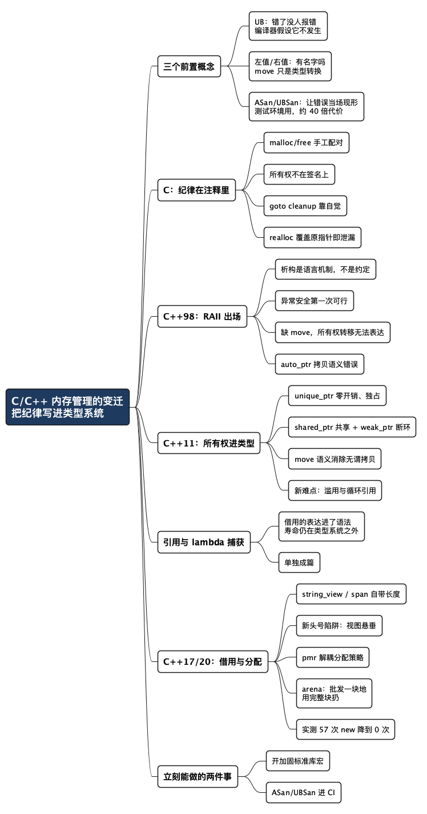

C/C++ 内存管理方法的变迁：把纪律写进类型系统
Posted on 五 04 9月 2026 in Tech
| Abstract | C/C++ 内存管理方法的变迁 |
|---|---|
| Authors | Walter Fan |
| Category | Tech |
| Status | v1.0 |
| Updated | 2026-09-04 |
| License | CC-BY-NC-ND 4.0 |
大纲
展开看看
- 核心结论：C/C++ 内存管理的演进，本质是把"谁负责释放、对象活多久"这条纪律，从注释里搬进类型系统。能让编译器查的，就别指望人自觉。
- 先约定三个词：UB（未定义行为，实测同一段代码
-O0返回 0、-O2返回 1，汇编里整个函数被优化成一条mov）、左值/右值（std::move本身不搬东西，只是一次类型转换）、ASan/UBSan（让"运气好才崩"变成"每次必崩且告诉你崩在哪"，实测在分配密集的负载上慢约 40 倍，只能进测试环境）。 - C 语言：
malloc/free必须成对，但配对关系不在类型里——它在注释里、在文档里、在写代码那个人的脑子里。错误处理路径一多就崩。 - C++98：RAII 让"释放"变成语言机制（析构函数），异常安全有救了；但没有 move 语义，"转移所有权"这件事表达不出来，
auto_ptr是个错误的答案。 - C++11：
unique_ptr/shared_ptr/weak_ptr+ move 语义，函数签名第一次能说清所有权。难点转移到了shared_ptr滥用和循环引用。 - 引用：C++ 最早的借用机制，能表达"借一个对象"却不表达"活多久"——这个缺口单独成篇。
- C++17/20：
string_view/span把"借用"显式化（但生命周期还得自己管），pmr把分配策略从类型里解耦，顺带讲清 arena（先批发一块地，用完整块扔）该用在哪。 - 实测：一段 8 行的
shared_ptr循环引用，析构函数一次都没跑；pmr换掉分配器，57 次operator new降到 0 次；开一个宏，越界访问从静默返回 0 变成当场 trap；string_view的悬垂一跨函数边界，-Wall -Wextra全开也一声不响。 - 最佳实践：优先值语义 → 容器 →
unique_ptr→shared_ptr；签名即契约；make_系列；sanitizer 进 CI。 - 常见陷阱：8 个，每个都配了触发条件和修法。
- 检查清单：一张能直接抄进 code review 模板的表。
代码评审里有一个问题，我问过几百遍，也被问过几百遍：
"这个指针，谁负责 free？"
这个问题本身三十年没变，但答案存放在什么地方，变了好几轮。在 C 里，答案在注释里；在早期 C++ 里，答案在析构函数里；在现代 C++ 里，答案在函数签名里——编译器能读懂，也能拦住你。
C/C++ 内存管理的演进史，是一部"把纪律写进类型系统"的历史。 不是发明了更花哨的指针，而是把原本只能靠人记住、靠 code review 抓的规矩，一点点变成编译器能检查的东西。
Chromium 团队分析了 2015 年以来 912 个高危/严重级别安全漏洞，约 70% 是内存安全问题，其中一半是 use-after-free（Chromium Memory Safety）；微软那边在 2019 年也给出了几乎一样的数字——过去十几年约 70% 的安全更新在处理内存安全问题。所以下面这些"语法糖"，其实是在填一个每年吃掉无数人力的坑。
下面的例子都在 Apple clang 21 上真跑过，贴的是实测输出。
先约定三个词
后面会反复用到三个词，各自对应一件很实际的事：为什么错了不报错、为什么能"搬"而不是"拷"、怎么让错误当场现形。已经熟的读者可以跳到下一节。
UB：未定义行为——错了，但没人负责报错
UB 是 undefined behavior 的缩写，中文叫未定义行为。标准里的意思很朴素：你违反了规则，那接下来发生什么，标准不做任何规定。
关键在于"不做任何规定"这几个字。它不是"会崩溃"，也不是"结果不确定"，而是编译器可以假设这件事根本不会发生，并基于这个假设去优化。看一段 C 代码：
int f(int x) {
return x + 1 > x; /* 有符号整数溢出是 UB */
}
printf("f(INT_MAX) = %d\n", f(INT_MAX));
数学上，INT_MAX + 1 会溢出，所以这个表达式应该是假。实测：
--- -O0 ---
f(INT_MAX) = 0
--- -O2 ---
f(INT_MAX) = 1
同一份代码，换个优化级别，答案从 0 变成 1。 为什么？看 -O2 生成的汇编：
_f:
mov w0, #1 ; 直接返回 1，加法和比较全没了
ret
编译器的推理是这样的：溢出是 UB，UB 不会发生，那 x + 1 必然大于 x，所以 f 恒等于 1——整个函数体被优化成一条 mov。它没有出错，它是严格按标准在做优化；错的是我写了一段 UB。
UB 最难缠的地方在于：
- 它不保证崩溃。 崩了反而是运气好。更常见的是悄悄给个错值，一路算下去。
- 它会随编译器、优化级别、平台而变。 本地 debug build 跑了一年好好的，上线 release build 出事——这类线上事故我见过不止一次。
- 它不"局部"。 上面那个例子里，UB 不只是让加法出错，而是让编译器删掉了整段逻辑。
后面出现的悬垂指针、use-after-free、越界访问、解空指针，全都属于 UB。所以说"这是 UB"，意思不是"这样写不好看"，而是：这段代码的行为不再由你决定了。
左值与右值：为什么 C++11 能"搬"而不是"拷"
要理解 move 语义，得先分清两个词。最实用的判断法是问一句：它有名字吗？还能不能再用一次？
- 左值（lvalue）：有名字、有身份、后面还可能被用到的东西。
std::string s;里的s就是左值。 - 右值（rvalue）：临时的、没名字、这个表达式结束就没人认识它的东西。函数返回的临时对象、字面量，都是右值。
这个区分为什么值得进标准？因为它给了编译器一个安全的判断依据：如果一个对象是右值，说明没有别人还会用它，那我就可以把它肚子里的资源（堆上那块内存）直接掏出来据为己有，而不必老老实实拷一份。这就是 move（移动）。C++11 新增的 &&（右值引用）就是用来在函数签名上说"我要的是一个右值，我打算搬它"。
void take(std::string&&) { std::puts("绑到右值引用：可以下手搬"); }
void take(const std::string&) { std::puts("绑到 const 左值引用：只能看"); }
std::string make() { return "temp"; }
std::string s = "named";
take(s); // s 有名字 → 左值
take(make()); // 临时对象 → 右值
take(std::move(s)); // 把左值"当作"右值交出去
实测：
绑到 const 左值引用：只能看
绑到右值引用：可以下手搬
绑到右值引用：可以下手搬
一个特别常见的误解：std::move 本身不搬任何东西。它只是一次类型转换，作用是"把这个左值标记成右值，允许别人来搬"。真正的搬运发生在接手方的移动构造/移动赋值里。实测能看得很清楚：
std::string a = "a-string-long-enough-to-live-on-the-heap";
std::string b = std::move(a); // 这里真的搬了（调用移动构造）
std::string c = "another-long-string-on-the-heap-as-well";
std::string&& r = std::move(c); // 只绑了个引用，没构造任何对象
b = "a-string-long-enough-to-live-on-the-heap"
a = "" (长度 0) ← a 被搬空了
c = "another-long-string-on-the-heap-as-well" (长度 39) <- 什么都没被搬走
a 被搬空了，c 一根头发都没少——差别在于有没有人真的来接。顺带记住被搬走之后的规矩：被 move 过的对象处于"有效但未指定"的状态，你可以给它赋新值、可以销毁它，但不该假设它里面还剩什么。（std::string 通常变空，但那是实现行为，不是标准承诺。）
这套机制正是 C++11 能用 unique_ptr 表达"所有权转移"的地基：独占的所有权不能拷贝，但可以搬。
ASan / UBSan：让错误当场现形
前面说 UB 的可怕之处是"不保证崩溃"。那有没有办法让它必须崩？有，这就是 sanitizer（消毒器）——编译器在生成代码时插入额外检查，运行到出错那一刻立刻停下并打印现场。
用到两个：
| 工具 | 全称 | 抓什么 | 开关 |
|---|---|---|---|
| ASan | AddressSanitizer | 内存地址类错误：use-after-free、越界读写、栈上对象过期后被访问、内存泄漏 | -fsanitize=address |
| UBSan | UndefinedBehaviorSanitizer | 其他各类 UB：整数溢出、除零、空指针解引用、错误的类型转换 | -fsanitize=undefined |
拿刚才那段溢出代码开上 UBSan，它不再默默返回 1：
ub.c:4:12: runtime error: signed integer overflow: 2147483647 + 1
cannot be represented in type 'int'
报错精确到文件、行、列，还告诉你溢出的具体数值。 它们把"运气好才会崩"的问题，变成了"每次必崩、且告诉你崩在哪"。
三点使用须知：
-
两个可以一起开，
-fsanitize=address,undefined能正常编译。但 ASan 和 TSan（ThreadSanitizer，查数据竞争）不能同时用，clang 会直接拒绝：console clang++: error: invalid argument '-fsanitize=address' not allowed with '-fsanitize=thread' -
有性能代价，所以只在测试环境开，不上生产。 我拿一段分配密集的循环交替跑了 5 轮：
console 不开 sanitizer： 7 ms 开 ASan+UBSan： ~300 ms这个例子里慢了约 40 倍，内存占用也会明显上升。倍数和负载强相关——内存操作越密集差得越多，计算密集型的代码则轻得多，所以这个数字只能当量级参考。
-
它只能发现"真的被执行到"的错误。 sanitizer 是运行期工具，没有测试用例覆盖到的那行代码，它一样查不出来。所以它的效果取决于你的测试覆盖率，别指望开了就万事大吉。
还有个平台坑：ASAN_OPTIONS=detect_leaks=1 这个查泄漏的功能在 Linux 上好用，在 macOS/ARM 上不支持：
AddressSanitizer: detect_leaks is not supported on this platform.
所以下文讲循环引用泄漏时，我是靠析构函数打印来证明泄漏的，而不是靠 LeakSanitizer 的报告。
一、C 语言：纪律全靠人记
C 的内存模型干净得近乎冷酷：malloc 要一块，free 还回去，realloc 换个大小。没有隐藏动作，没有额外开销，你写什么它做什么。这是 C 至今在内核、嵌入式、驱动里不可替代的原因——可预测性本身就是一种功能。
难点也在这里：malloc 和 free 必须严格配对，但这个配对关系不体现在任何类型上。
看这个函数签名：
char *build_message(const char *user);
返回的这块内存，是调用方 free，还是库内部有个 release_message()？还是说它指向一块静态缓冲区，你 free 了就崩？签名一个字都没说。 答案在头文件的注释里，在文档里，在写这个函数那个人的脑子里。
更麻烦的是错误处理。一个函数申请三块内存，中间任何一步失败都要把前面的还回去，于是就有了 C 程序员都熟悉的 goto cleanup：
int handle(void) {
char *a = NULL, *b = NULL, *c = NULL;
int rc = -1;
if (!(a = malloc(N))) goto done;
if (!(b = malloc(N))) goto done;
if (!(c = malloc(N))) goto done;
/* ... 真正的业务逻辑 ... */
rc = 0;
done:
free(c); free(b); free(a); /* free(NULL) 是安全的，所以能这么写 */
return rc;
}
这个模式是有效的，而且在优秀的 C 代码库里随处可见——但它的正确性完全依赖人的自觉：新加一个 d 分配，你得记得在 done: 加一行，还得记得初始化成 NULL。漏了编译器不会说话。
再看一个特别容易踩、连老手都栽的坑——realloc：
buf = realloc(buf, new_size); /* 看起来天经地义 */
if (!buf) return -1;
realloc 失败时返回 NULL，但原来那块内存还在。上面这行已经把 buf 覆盖成 NULL 了，旧地址永久丢失，妥妥的泄漏。我拿 ASan 跑了一个必然失败的 realloc：
==24110==ERROR: AddressSanitizer: allocation-size-too-big
#1 0x000104e6083c in main realloc.c:7
正确写法必须借一个临时变量：
char *tmp = realloc(buf, new_size);
if (!tmp) { /* buf 还有效，可以继续用或自行释放 */ return -1; }
buf = tmp;
C 阶段的特点与难点，一句话总结：
| 特点 | 透明、零开销、完全可控；内存布局所见即所得 |
| 难点 | 所有权只存在于注释里；错误路径上的释放靠人肉配对；realloc 语义反直觉；指针和长度分离（数组一旦传参就丢了长度） |
二、C++98/03：RAII 出场，但所有权还在注释里
C++ 带来的第一个真正的突破，不是 new/delete——那只是 malloc/free 加了个构造析构。真正的突破是 RAII（Resource Acquisition Is Initialization，资源获取即初始化）：把"释放"绑定到对象析构上，而析构是语言保证的，不是约定。
差别在异常面前最明显。我写了两个版本跑一下：
struct Conn { ~Conn(){ std::puts("~Conn"); } };
void may_throw() { throw std::runtime_error("boom"); }
void old_way() { // C++98 里非常常见的写法
Conn* c = new Conn();
may_throw(); // 抛了，下面这行永远执行不到
delete c;
}
void raii_way() {
Conn c; // 栈对象，栈展开时照样析构
may_throw();
}
实测输出：
caught from old_way ← 注意：没有 ~Conn，泄漏了
~Conn
caught from raii_way
old_way 里的 delete 被异常直接跳过，Conn 的析构函数一次都没跑。而 raii_way 里那个栈对象，在栈展开（stack unwinding）过程中被老老实实析构了。同一个"释放"动作，一个靠你记得写，一个靠语言保证——这就是 RAII 的全部价值。
但 C++98 的故事只讲了一半，因为它缺一样关键东西：move 语义。
没有 move，"把所有权从 A 交给 B"这个动作在语言里表达不出来。当年标准库的答案是 std::auto_ptr，它的做法是让拷贝构造去偷源对象的指针：
std::auto_ptr<Foo> a(new Foo);
std::auto_ptr<Foo> b = a; // 编译通过！但 a 现在是空的
// 之后用 a 就是解空指针
一个看起来像拷贝的操作，把源对象改了。这违反了所有人对拷贝的直觉，也让 auto_ptr 不能放进 STL 容器（容器会在你不知道的时候拷贝元素，一拷贝所有权就跑了）。auto_ptr 在 C++11 里被弃用、C++17 里被移除，是标准库里少见的"承认设计错了"的案例。
于是 C++98 时代的现实是：RAII 解决了局部资源的释放，但跨函数、跨容器的所有权转移依然只能靠裸指针加注释。容器里装 Foo* 是那个年代的家常饭，谁 delete 全靠约定。
| 特点 | RAII 让释放成为语言机制；异常安全第一次可行；三法则（拷贝构造/赋值/析构要么都写要么都不写）成为共识 |
| 难点 | 没有 move，所有权转移无法表达；auto_ptr 拷贝语义错误且不能进容器；容器装裸指针是常态；深拷贝到处发生，性能只能靠手写 swap 之类的技巧绕 |
三、C++11：所有权终于进了类型系统
C++11 是分水岭。它给了两样东西：move 语义（右值引用），以及建立在它之上的一套智能指针。
意义不在于"不用手写 delete 了"——那只是副产品。真正的意义是：函数签名第一次能说清所有权。
void take(std::unique_ptr<Session>); // 我接管，你别管了
void borrow(Session&); // 我只用，不负责生死
void share(std::shared_ptr<Session>); // 我要和你一起持有
三个签名，三种契约，不需要读注释。而且这不只是"表达清楚了"，是编译器会强制执行：
auto s = std::make_unique<Session>();
borrow(*s);
take(s); // ← 编译错误
take(std::move(s)); // ← 这样才行
第 3 行的实测报错：
own.cpp:8:8: error: call to implicitly-deleted copy constructor of
'std::unique_ptr<Session>'
note: copy constructor is implicitly deleted because 'unique_ptr<Session>'
has a user-declared move constructor
同一个错误——"两个地方都以为自己该释放"——在 C 里是运行期的 double free，在 C++98 里是 code review 该抓出来的疏忽，在 C++11 里是一条编译错误。 纪律进了类型系统，检查就交给了机器。
再说个常被误解的成本问题，实测量一下：
sizeof(T*)=8 unique_ptr=8 shared_ptr=16 weak_ptr=16
shared_ptr<T>(new T): 2 次分配, 36 字节
make_shared<T>(): 1 次分配, 32 字节
unique_ptr 和裸指针一样大，是真正的零开销抽象——没有理由不用它。shared_ptr 是两倍大（对象指针 + 控制块指针），而且 shared_ptr<T>(new T) 要分配两次（一次给对象、一次给控制块），make_shared 合成一次。所以规矩是：能 make_ 就 make_，既省一次分配，也顺手避免了"参数求值顺序导致异常泄漏"的老问题。
难点转移了，但没消失
C++11 之后，"忘记 delete"基本绝迹了，取而代之的是两类新问题。
第一类：shared_ptr 被当成 GC 用。 很多从 Java/Go 过来的同事，一上手就全套 shared_ptr，图个省心。代价是引用计数的原子操作开销、对象生命周期变得无法推理（谁还持有它？不知道），以及最经典的循环引用：
struct Node {
std::shared_ptr<Node> peer;
~Node() { std::puts("~Node"); }
};
{
auto a = std::make_shared<Node>();
auto b = std::make_shared<Node>();
a->peer = b;
b->peer = a; // 互相持有
}
实测输出：
a.use_count=2 b.use_count=2
scope exited
~Node 一次都没打印。 a 和 b 出作用域时计数各减 1，从 2 变成 1，永远到不了 0——两个对象手拉手一起泄漏，ASan 都不一定报（它只报"程序结束时还没释放"，而很多长跑服务根本不结束）。
修法是把反向边换成 weak_ptr：
struct Node {
std::shared_ptr<Node> child;
std::weak_ptr<Node> parent; // 反向边不持有所有权
~Node() { std::puts("~Node"); }
};
实测：
p.use_count=1 c.use_count=2
parent 还活着，lock 成功
~Node
~Node
scope exited
计数正常归零，析构正常触发。经验规则：图结构里，"往下"用 shared_ptr，"往上"和"横向"用 weak_ptr；用之前 lock() 拿一个临时的强引用，拿不到就说明对象没了。
第二类：把"指针线程安全"理解错了。 shared_ptr 的引用计数是原子的，这不等于它指向的对象是线程安全的，也不等于同一个 shared_ptr 变量能被多线程同时读写。前者要你自己加锁，后者在 C++20 之前得用 std::atomic_load/store 那套自由函数（C++20 起有了 std::atomic<std::shared_ptr<T>>）。
| 特点 | 所有权进入类型系统，编译器强制；move 语义消除了大量无谓拷贝；unique_ptr 零开销 |
| 难点 | shared_ptr 滥用导致生命周期无法推理；循环引用泄漏且难发现；引用计数的原子开销与线程安全边界易误解；裸指针依然合法，旧代码不会自动变好 |
引用是最早的"借用"，也是漏得最厉害的一处
智能指针管住了所有权，但 C++ 最早的借用机制——引用（T&、const T&）——始终有个缺口：它能表达"借一个对象"，却完全不表达"这个对象活多久"。
于是所有权进了类型系统，寿命还留在外面。悬垂引用、[=] 按指针捕 this、参数别名（f(v, v[0])）这些坑，全长在这个缺口上，而且大多数连警告都没有。
这块单独写了一篇：《C++ 悬垂引用与 lambda 捕获：语法上最省事，出事时最难查》 —— 四种悬垂来源、lambda 捕获的五种误用、该用与不该用引用的对照，外加一个默认关掉、不开就查不出栈上悬垂的 ASan 开关。
四、C++17/20：把"借用"和"分配策略"也交出去
C++11 解决了所有权，但留了一块空白：借用的类型化表达。
引用能表达"借一个对象"，但表达不了"借一段连续的元素"。传一个只读字符串，写 const std::string& 会在调用方是 const char* 时悄悄构造一个临时 string（一次分配）；传一个数组，(int* p, size_t n) 这对参数天生可能对不上。C++17 的 string_view 和 C++20 的 span 就是来填这块的：它们是"我只看，不持有"的类型化表达，而且带着长度。
void sum(std::span<const int> xs) { // 不关心你是数组、vector 还是 array
long s = 0; for (int x : xs) s += x;
std::printf("n=%zu sum=%ld\n", xs.size(), s);
}
int raw[4]{1,2,3,4};
std::vector<int> v{1,2,3,4,5};
sum(raw); sum(v); sum({v.data(), 2});
实测：
n=4 sum=10
n=5 sum=15
n=2 sum=3
一个签名吃三种容器，长度自带，不用再传 size 参数——参数对不上这个错误类别，直接消失了。
但要注意：span 和 string_view 只解决了"表达借用"，没有解决"借用的东西还活着吗"。 这是它们最大的陷阱：
std::string name() { return "walter"; }
std::string_view sv = name(); // 临时 string 立刻死了
std::printf("[%.*s]\n", (int)sv.size(), sv.data());
clang 给了警告，ASan 给了报错：
warning: object backing the pointer will be destroyed at the end of
the full-expression [-Wdangling-gsl]
ERROR: AddressSanitizer: stack-use-after-scope
[64, 88) 'ref.tmp' (line 6) <== 访问落在这个临时对象里
编译器在这方面能帮多少，我也实测划了条线。同一表达式内的悬垂（上面那种），-Wdangling-gsl 抓得到；返回指向局部对象的视图，-Wreturn-stack-address 也抓得到。但一旦跨了函数边界，它就沉默了：
struct Cache { std::string_view key; }; // 视图当成员
void store(std::vector<Cache>& c, const std::string& s) {
c.push_back(Cache{s}); // s 活多久？调用方说了算
}
void use() {
std::vector<Cache> c;
{ std::string tmp = "walter"; store(c, tmp); } // tmp 死了，c[0].key 悬垂
}
-Wall -Wextra 全开，clang 一句警告都没有——因为 store 单看没错，use 单看也没错，错在两者的生命周期假设对不上，而这个信息不在任何一个函数的签名里。这正是 C 时代那个老问题换了层皮：所有权和寿命的约定又一次跑到类型系统之外去了。
所以规矩是：span/string_view 只做参数，不做成员、不做返回值、不存起来。
同样属于"生命周期陷阱"的还有 vector 扩容：
std::vector<int> v{1,2,3};
int* p = &v[0];
v.push_back(4); // 扩容，整块内存搬家
std::printf("%d\n", *p); // p 已经指向被释放的内存
ERROR: AddressSanitizer: heap-use-after-free
freed by thread T0 here: ... __libcpp_deallocate ...
pmr：分配策略不该写死在类型里
C++17 的另一件大事是 <memory_resource>（polymorphic memory resource，简称 pmr）。在此之前，自定义分配器要写进模板参数——std::vector<T, MyAlloc> 和 std::vector<T> 是两个不同类型，一旦用了就污染整个接口。pmr 把分配器变成一个运行期传入的指针，类型不变。
最实用的场景是请求级的短生命周期对象：一次请求里造几十上百个小对象，请求结束全扔。这类场景的标准解法叫 arena（竞技场，也叫 region、bump allocator）——先批发一大块内存，然后在这块地里划分给各个小对象；不逐个归还，用完了整块一起扔。
打个比方：普通的 malloc/free 像去食堂，每买一份饭都要排队结账，吃完还要各自还餐盘；arena 是包场，一次把整张桌子包下来，中间随便用，散场时桌子整个收走，不管谁用过哪个盘子。
它快在两处：分配只是把一个指针往前推（所以又叫 bump allocator，"撞"一下指针就完事），释放则退化成一次操作——把整块地还掉，中间那几百个对象一个都不用单独析构回收。代价是不能挑着还：你没法只归还其中某一个对象。
C++17 里 monotonic_buffer_resource 就是标准库版的 arena：
std::array<std::byte, 8192> buf{}; // 栈上 8KB
std::pmr::monotonic_buffer_resource pool{buf.data(), buf.size()};
std::pmr::vector<std::pmr::string> v{&pool}; // 分配全走 pool
for (int i = 0; i < 50; ++i)
v.emplace_back("request-scoped-string-longer-than-sso-buffer");
// pool 出作用域时一次性回收，不逐个 free
我重载了全局 operator new 数了一下，两个版本的对照：
普通 vector<string>: operator new 调用 57 次
pmr + 栈上 8KB: operator new 调用 0 次
57 次 → 0 次。省掉的不只是分配耗时，还有堆碎片和缓存不友好——50 个字符串散落在堆上，和挤在同一块 8KB 里，遍历时的缓存表现是两码事。
代价是 monotonic_buffer_resource 不复用已释放的空间，只单向推进。反复"分配 64 字节、马上释放"，看它给的偏移量：
第 1 次分配 64 字节 -> 偏移 960
第 2 次分配 64 字节 -> 偏移 896
第 3 次分配 64 字节 -> 偏移 832
第 4 次分配 64 字节 -> 偏移 768
指针一路往前推，deallocate 根本没起作用——对 arena 来说它就是个空操作。换成 unsynchronized_pool_resource（标准库里会维护自由链表的那个），同样的代码每次都给回同一个地址：
第 1 次分配 64 字节 -> 0x102a2e2b0
第 2 次分配 64 字节 -> 0x102a2e2b0
第 3 次分配 64 字节 -> 0x102a2e2b0
第 4 次分配 64 字节 -> 0x102a2e2b0
选型规则因此很清楚："一批对象同生共死"用 arena（monotonic_buffer_resource），"生命周期长短交错、反复建了又扔"用池（*_pool_resource）。 选错的代价是 arena 撑爆缓冲区后会回退到上游 resource（默认就是堆），优势全没，还白占了那块地。
C++26 收了什么
C++26 在内存安全上收了一件很实在的东西：加固标准库（hardened standard library，P3471），把一批原本是 UB 的常见错误——vector::operator[] 越界、解空 unique_ptr、字符串越界——变成可检测的契约违反。好消息是，各家标准库早就以自己的开关提供了同等能力，今天就能用。我实测了同一段越界代码：
std::vector<int> v{1,2,3};
std::printf("%d\n", v[7]); // 标准说这是 UB
--- 不开硬化 ---
0 ← 静默返回垃圾值，程序继续跑
exit=0
--- 开硬化（-D_LIBCPP_HARDENING_MODE=_LIBCPP_HARDENING_MODE_FAST）---
exit=133 ← 当场 trap（SIGTRAP）
同一份代码，一个宏的差别：静默错下去，还是当场停下。 libstdc++ 对应的是 -D_GLIBCXX_ASSERTIONS，MSVC 是 _ITERATOR_DEBUG_LEVEL=1。
它和 sanitizer 的分工不同。三个版本交替跑 5 轮（同一段分配密集的循环）：
不开任何检查： 7 ms
开加固标准库： 7~8 ms ← 这个负载上量不出差别
开 ASan+UBSan： ~300 ms ← 几十倍
加固标准库便宜到这个基准测不出来——它只在容器访问这类地方插一次边界比较，分支预测基本都能命中；代价是覆盖面窄，只管标准库那几类错误。ASan 覆盖面宽得多，但几十倍的代价只能留在测试环境。
（别把这两个数字当通用结论：加固的开销取决于你有多少容器下标访问，热路径密集的代码是能量出来的，上线前自己测。）
两者不冲突，该一起上：加固进生产，ASan 进 CI。 如果你的项目还没开加固，这大概是投入产出比最高的一行改动。
至于 Herb Sutter 推的"安全剖面"（[[profiles::enforce(bounds, type, lifetime)]]，P3081），据 WrocPP 的整理，它没进 C++26，推到了后续标准，目前也没有编译器实现。所以别把希望寄托在语言未来的关键字上，先把手上能开的检查开起来。
| 特点 | span/string_view 把借用类型化并自带长度；pmr 让分配策略与类型解耦；加固标准库把 UB 变成可检测错误 |
| 难点 | 视图类型的悬垂是新的头号陷阱，编译器只能部分帮忙；pmr 要选对 resource（arena 还是池，取决于对象是否同生共死）；裸指针、C 风格数组、memcpy 依然合法 |
最佳实践
按优先级排，从上往下选，能停在第几条就停在第几条：
- 优先值语义和栈对象。 能
Foo f;就别new Foo。这是唯一一种"不可能出错"的内存管理。 - 需要动态数量，先想容器。
vector、string、unordered_map已经把 RAII 做好了，比你自己攒一套强。 - 需要多态或者要跨接口交付，用
unique_ptr。 它和裸指针一样大，独占语义清晰，是智能指针的默认选择。 - 真的需要共享所有权，才用
shared_ptr。 判断标准是"确实存在多个独立的、无法排序的持有者"，而不是"我懒得想谁该释放"。 - 反向引用一律
weak_ptr。 parent 指针、observer 列表、缓存条目，全走weak_ptr+lock()。 - 签名即契约。 参数写
T&/const T&/span<const T>表示借用，写unique_ptr<T>表示接管，写shared_ptr<T>表示共享。让读代码的人不用翻注释。 - 一律用
make_unique/make_shared。 少一次分配，也堵住异常安全的漏洞。 new/delete只出现在两个地方： 你自己写的资源封装类内部，以及和 C API 的边界上。业务代码里出现裸delete，就是一个 review 意见。-
和 C API 打交道，用自定义 deleter 包一层。
cpp using FilePtr = std::unique_ptr<FILE, decltype(&fclose)>; FilePtr fp{fopen("a.txt", "r"), &fclose}; -
热路径考虑 arena（
pmr）。 请求级、帧级、批处理级这类同生共死的短命对象，用monotonic_buffer_resource圈一块地、统一回收；生命周期交错的用*_pool_resource。别一上来就优化，先测。 -
把检查工具变成 CI 的一部分。 这条是所有条里性价比最高的：
# 编译期：开加固标准库
-D_LIBCPP_HARDENING_MODE=_LIBCPP_HARDENING_MODE_FAST # clang/libc++
-D_GLIBCXX_ASSERTIONS # gcc/libstdc++
# 测试期：ASan + UBSan 一起上
-fsanitize=address,undefined -fno-omit-frame-pointer -g
# 并发问题另开一轮（和 ASan 不能同时用）
-fsanitize=thread
# 运行时：默认关的，务必打开——栈上悬垂全靠它
export ASAN_OPTIONS=detect_stack_use_after_return=1
这些工具能在几秒内抓到人眼看半天看不出来的问题。 三条边界：只在测试环境开（上面那个负载慢约 40 倍）、ASan 和 TSan 不能同时用、覆盖不到的代码它也查不到。
常见陷阱
| # | 陷阱 | 什么时候咬你 | 修法 |
|---|---|---|---|
| 1 | buf = realloc(buf, n) |
realloc 失败，旧地址被 NULL 覆盖 |
先接到 tmp，成功后再赋值 |
| 2 | shared_ptr 循环引用 |
双向链表、parent 指针、observer 互持 | 反向边改 weak_ptr |
| 3 | string_view/span 悬垂 |
绑定到临时对象，或存成成员/返回值 | 只做参数；留意 -Wdangling-gsl |
| 4 | 迭代器/指针在扩容后失效 | push_back、insert、erase 之后还用旧指针 |
改用下标；或 reserve；或选指针稳定的容器 |
| 5 | 同一个对象被两个 shared_ptr 组各自管 |
从裸指针二次构造 shared_ptr(raw) |
全程只从 make_shared 出发；需要从内部拿引用用 enable_shared_from_this |
| 6 | 基类析构函数不是 virtual |
通过基类指针 delete 派生对象 |
多态基类的析构一律 virtual（unique_ptr<Base> 也救不了你） |
| 7 | 混用不同的分配家族 | malloc 的内存用 delete 放，new[] 的用 delete 放 |
谁分配谁释放，配对使用；包一层 RAII |
| 8 | 以为智能指针管住了线程安全 | 多线程读写同一个 shared_ptr 变量，或并发改它指向的对象 |
对象要自己加锁；指针变量本身用 atomic<shared_ptr>（C++20） |
第 6 条最反直觉：std::unique_ptr<Base> p = std::make_unique<Derived>(); 看着人畜无害，但如果 Base::~Base() 不是 virtual，销毁时只会调 Base 的析构，Derived 的成员全部泄漏——智能指针不会替你修好类设计的问题。
检查清单
拿去直接贴进 code review 模板：
- [ ] 这块内存的所有者是谁？能不能从类型上看出来（而不是从注释）？
- [ ] 业务代码里还有裸
new/delete吗？能不能换成容器、make_unique或值语义？ - [ ] 每个
shared_ptr都问一遍：真的有多个独立持有者吗？ 能降级成unique_ptr或引用吗？ - [ ] 对象图里有没有环？反向边是不是都用了
weak_ptr？ - [ ]
string_view/span有没有被存成成员变量、返回值，或者绑到临时对象上？ - [ ] 拿了容器元素的指针/引用/迭代器之后，中间有没有可能发生扩容或删除？
- [ ] 多态基类的析构函数是
virtual吗？ - [ ] 有异常或提前
return的路径上，资源还能正确释放吗（也就是：是不是都 RAII 化了）？ - [ ] 跨线程共享的对象，锁在哪？指针变量本身有没有并发读写？
- [ ] CI 里跑了 ASan/UBSan 吗？加固标准库的宏开了吗？
ASAN_OPTIONS里加了detect_stack_use_after_return=1吗？ - [ ] 和 C API 的边界上，有没有用
unique_ptr+ 自定义 deleter 包住？
总结：能让编译器查的，就别指望人自觉
回到开头那个问题——"这个指针谁负责 free？"
三十年演进，这个问题的答案换了三次住址：从注释（C），到析构函数（C++98 的 RAII），到函数签名（C++11 的智能指针），再到编译选项和 sanitizer（C++17/20 的加固与检查）。每一步都在做同一件事：把只有人能读的约定，翻译成机器能读的约束。
这不是 C++ 独有的思路。类型注解、静态检查、契约测试、CI 门禁，说到底都是同一招——依赖人的自觉不可持续，把规矩变成机器能执行的检查才可持续。我写了大半辈子后端，见过太多"这个约定我们都知道"的团队规范，最后活下来的从来不是文档写得最全的，而是被 CI 拦住的那几条。
所以如果你的 C++ 项目今天只能做一件事：把加固标准库的宏打开，把 ASan 塞进 CI。就那两行——上面那些静默出错的例子，全靠它们才现形。
剩下的部分——编译器管不到的地方，还是得靠人想清楚"这个对象该活多久"。工具进步了三十年，这个问题一天也没被替代过。栽跟头最多的是引用和 lambda 捕获，见 《C++ 悬垂引用与 lambda 捕获》。
全文思维导图
@startmindmap
<style>
mindmapDiagram {
node {
BackgroundColor #F8F9FA
RoundCorner 10
Padding 10
FontSize 13
}
:depth(0) {
BackgroundColor #1E3A5F
FontColor white
FontSize 18
FontStyle bold
}
:depth(1) {
FontSize 15
FontStyle bold
}
:depth(2) {
FontSize 13
}
}
</style>
* C/C++ 内存管理的变迁\n把纪律写进类型系统
** 三个前置概念
*** UB：错了没人报错\n编译器假设它不发生
*** 左值/右值：有名字吗\nmove 只是类型转换
*** ASan/UBSan：让错误当场现形\n测试环境用，约 40 倍代价
** C：纪律在注释里
*** malloc/free 手工配对
*** 所有权不在签名上
*** goto cleanup 靠自觉
*** realloc 覆盖原指针即泄漏
** C++98：RAII 出场
*** 析构是语言机制，不是约定
*** 异常安全第一次可行
*** 缺 move，所有权转移无法表达
*** auto_ptr 拷贝语义错误
** C++11：所有权进类型
*** unique_ptr 零开销、独占
*** shared_ptr 共享 + weak_ptr 断环
*** move 语义消除无谓拷贝
*** 新难点：滥用与循环引用
** 引用与 lambda 捕获
*** 借用的表达进了语法\n寿命仍在类型系统之外
*** 单独成篇
** C++17/20：借用与分配
*** string_view / span 自带长度
*** 新头号陷阱：视图悬垂
*** pmr 解耦分配策略
*** arena：批发一块地\n用完整块扔
*** 实测 57 次 new 降到 0 次
** 立刻能做的两件事
*** 开加固标准库宏
*** ASan/UBSan 进 CI
@endmindmap

本作品采用知识共享署名-非商业性使用-禁止演绎 4.0 国际许可协议进行许可。 欢迎在我的个人网站 https://www.fanyamin.com 访问原文并评论。